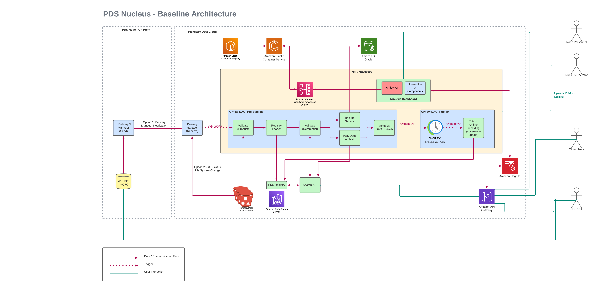

Architecture¶
What is Nucleus?¶
Currently all PDS EN validation, ingestion, and archiving software have their own installations and manual executions. Nucleus is a proposed extendable, performant pipeline service to integrate and automate PDS tool execution. With Nucleus, The validation, ingestion, and archival of PDS data is almost entirely automated through a pipeline, minimizing manual overhead. Additionally, the pipeline would be extendable, especially by discipline nodes, for future additions to the pipeline of specific steps.
Nucleus Baseline Architecture¶
The Nucleus Baseline Architecture represents a minimum viable product (MVP) to be delivered to the customers of Nucleus. This contains all necessary components and services required to get started with Nucleus.
The following diagram shows the PDS Nucleus Baseline Architecture.
Nucleus will be deployed on an Amazon AWS cloud environment. The following AWS Services are required for the Nucleus baseline architecture.
Amazon MWAA Airflow environment¶
Amazon Managed Workflows for Apache Airflow (MWAA) is a managed orchestration service for Apache Airflow. The Airflow workflows are defined using Directed Acyclic Graphs (DAGs) written in Python. This environment also provides capabilities to execute and monitor DAGs from the AWS Management Console, a command line interface (CLI), a software development kit (SDK), or the Apache Airflow user interface (UI). The pricing for MWAA is primarily based on the size of the Airflow environment (workflow capacity, based on number of DAGs supported), additional worker instances, additional scheduler instances and meta database storage capacity. https://aws.amazon.com/managed-workflows-for-apache-airflow/pricing/
S3 Bucket to keep Airflow DAGs and Python requirements file¶
The DAGs and Python requirements file required for the Amazon MWAA Airflow environment are stored in an S3 bucket. Deploying a new DAG to this environment is as simple as uploading a python file representing the DAG to this S3 bucket. https://aws.amazon.com/s3/pricing/
Amazon Elastic Container Registry (Amazon ECR) to keep Registry docker images¶
Most of the components of PDS will be deployed as docker containers and these docker images will be stored in Amazon ECR. https://aws.amazon.com/ecr/pricing/
Amazon Elastic Container Service (Amazon ECS) with Fargate Launch Type¶
The PDS docker containers used by Nucleus will be launched using Amazon ECS. The AWS Fargate Launch Type Model will be used for this and with AWS Fargate, the fees will be charged for the amount of vCPU and memory resources that the containerized PDS components request. https://aws.amazon.com/ecs/pricing/ https://aws.amazon.com/fargate/pricing/
PDS Registry Use Case for Nucleus Baseline Architecture¶
The Nucleus baseline architecture can easily support the following PDS archive management use cases:
- Read a PDS bundle :
from a URL
from an S3 bucket
Validate the products entering the archive
Load data to Elasticsearch/OpenSearch
Validate the Referential Integrity of the loaded data using Validate tool
Backup data in PDS Deep Archive (Amazon S3 Glacier)
Schedule data to be published online
Publish data based on the schedule defined above
Monitor the pipeline
Produce metrics for pipeline executions
Run Engineering node specific DAG on schedule (e.g. provenance script to select the latest vid)
In order to support the above PDS data management use cases, the following existing archive management components and services will be included in the Nucleus Baseline Architecture.
Delivery Manager¶
The Delivery Manager component is responsible for managing data deliveries and triggering Nucleus workflows. The data delivery is triggered when data hits the directory on a file system, S3 bucket or manually triggered to pull from data holdings.
Validate Tool¶
The Validate Tool project contains software for validating PDS4 product labels and product data. More details about Validate tool can be found at https://nasa-pds.github.io/validate/
Registry Loader¶
The Registry Loader contains the Harvest tool and Registry Manager tools. This component is used to load data into the Registry. More details about the Registry Loader docker image can be found at https://github.com/NASA-PDS/registry-loader/tree/main/docker
PDS Deep Archive and Backup Service¶
These services push data to AWS Deep Archive in regions different from S3 data.
PDS Data Publish Scheduler¶
PDS Data Publish Scheduler publishes data online, based on a scheduled release date/time. When Airflow executes this task, it will call the PDS Registry to publish relevant data.
Automating PDS Node Specific Nucleus Baseline Product Deployment¶
The Nucleus baseline product will be deployed on the NGAP AWS Cloud environment. The terraform scripts will be developed to accelerate the deployment process.
PDS Node specific deployment parameters will be configured in a terraform variable file and a PDS Node specific deployment will be done by executing a few terraform commands.